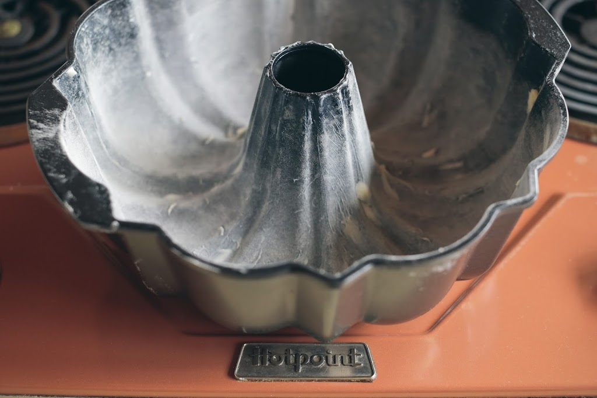
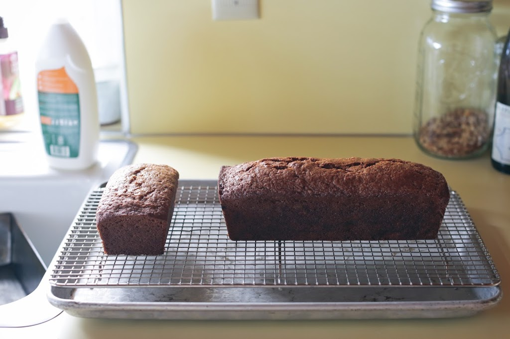
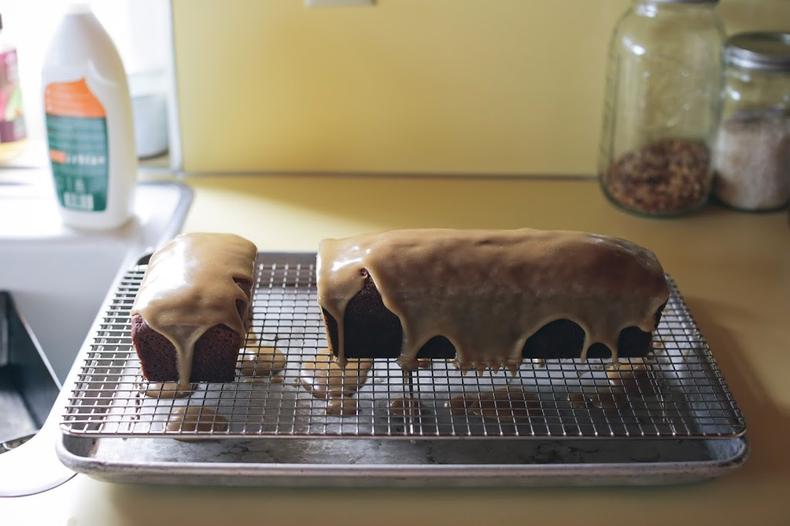

Tag: everyday cake
November 6
This one goes out to my friend Natalie. One night early last month, she and hers were over for dinner, and I made an applesauce cake with caramel glaze for dessert. As they left, she asked about the recipe, and she’s been patiently waiting for me to post it ever since. In the intervening weeks, our kitchen faucet sprung a leak – a leak that must have actually sprung a month or two before that, because by the time we noticed it, it had thoroughly saturated all the wooden surfaces below and around it, making them buckle and curl like waves on an ocean, a special ocean that smells like rot. We called Natalie and Michael, because they are handy people, and this past Sunday, they came over with their three-year-old son and gave their day to helping Brandon do a quick, cheap fix of the kitchen, ripping out approximately fifty percent of the counters and the sink (and heaving them, wheeeeeeee, out the window into the yard), patching the floor and drywall, and installing a stainless steel restaurant-supply sink and work table. I now really, really owe Natalie this cake recipe. I now owe Natalie a small-scale kitchen remodel.

I cannot take any credit for this cake. I cannot even take credit for finding the recipe. It comes from the great Merrill Stubbs of Food52, and I found it because the great Youngna Park, an artist / generally creative person / someone I admire, recommended it on Twitter. It was late September, and we were going apple-picking that weekend. We came home with enough apples to fill not only most of our fridge but also most of my mother’s, and over the weekend that followed, Mom and I turned them into Judy Rodgers’s roasted applesauce. And then I turned most of the applesauce into cake.
The original recipe uses a Bundt pan, and that’s how I made it the first time. I did not take a picture of it, because we were too busy eating it. A few days later, I made the cake again, but this time, I used one standard-size loaf pan and one mini loaf pan, with the intention of delivering the smaller one to my mom. I did not, because we were too busy eating it. I did, however, give her half. (Of the smaller one.) (With apologies.)

There are a lot of recipes for applesauce cake. But what makes this one so good is not only that it’s very moist – thanks to a generous amount of applesauce and to vegetable oil, rather than butter – but also that it’s spiced just enough. It calls for cinnamon, ginger, black pepper, and allspice, though I had no allspice, so I used grated nutmeg. (Never liked allspice much, anyway.) I also replaced the light brown sugar with dark brown sugar, because that was all we had, and because I hoped its deeper caramel flavor might sit well with the apples and warm spice. In any case, all of that made for a very, very good cake, plenty good as it was. But what made it a standout is this: once the cake is baked and cool, Merrill instructs us to make a quickly boiled glaze, cream and butter and brown sugar, and while the glaze is warm, to pour it over the top.

Taste the glaze on its own, and it’s sweet sweet sweet: you can almost hear the sugar crystals between your teeth. But against the dark, fragrant cake, it’s exactly right. Merrill calls it a caramel glaze. But even more than caramel, it tastes like a soft, thin layer of brown sugar fudge, or penuche – or Aunt Bill’s Candy, for any Oklahomans in the crowd. Fudge! On top of cake! Have a great weekend.
Applesauce Cake with Caramel Glaze
Adapted from Merrill Stubbs and Food52
If you have only light brown sugar in the house, by all means, use it. But having made the cake both ways, with light brown sugar and with dark brown sugar, I prefer it with dark. The flavor is fuller, with a different depth.
For the cake:
For the glaze:
Position a rack in the middle of the oven, and preheat the oven to 350°F. Butter and flour a standard-size (12-cup) Bundt pan.
In a medium bowl, combine the flour, baking soda, salt, pepper, and spices, and whisk to mix well.
In a large mixing bowl or the bowl of a standing mixer, beat the eggs with both sugars until light. Beat in the applesauce, oil, and vanilla until smooth. With the mixer on the lowest speed, add the flour mixture, and beat briefly, just to combine. Use a rubber spatula to fold gently, making sure that all the dry ingredients are incorporated. Scrape the batter into the prepared pan. Bake for about 45 minutes, until a toothpick inserted in the thickest part of the cake comes out clean. Cool the cake for 10 minutes in the pan on a rack before turning it out and allowing to cool completely. Make sure the cake is not at all warm when you make the glaze.
When you’re ready to glaze, set the cooling rack (with the cake on it) on top of a rimmed sheet pan. This will catch drips.
Put the butter in a medium (2- to 3-quart) saucepan with the brown sugar, cream, and salt, and set over medium heat. Bring to a full rolling boil, stirring constantly. Boil for one minute exactly, and then pull the pan off the heat. Leave to cool for a couple of minutes, and then gradually whisk in the confectioner’s sugar until you have a thick but pourable consistency – and note that you may not need all the sugar! I don’t use the full ¾ cup (90 grams). Really, eyeball it, and go with your gut. If you’ve added too much sugar and the mixture seems too thick, add a splash of cream to thin it slightly. And do not worry if the glaze seems to have little flecks of powdered sugar in it at first; just keep whisking, and they will dissolve. Then immediately pour the glaze over the cake, evenly covering as much surface area as possible. Let the glaze set before serving the cake.
Yield: a good 10 servings
As ever
A couple of weeks ago, I got up earlier than usual, while the light was still blue, and baked a cake. We are having a very adult fall – not adult in the sense of, I don’t know, the adult film industry, but in the sense that we now have a child who is enrolled in a real school. I remember only bits and pieces of my own first year of school, but I do remember operating under the happy illusion that my parents were bonafide adults who had things figured out. Having now crossed over to the other side of that illusion, I can report that, whoa, hey, it’s an illusion! June is no fool, but she’s content to play along as…
Read moreDoing it right
I believe in everyday cake. I may have remembered to floss four times last week, up from my usual count of zero. I may have had avocado toast one sunny morning at Vif, with za’atar, aleppo pepper, preserved Meyer lemon, and celery(!). I may have even rediscovered R.E.M.’s superlative Green after forgetting about it for twenty years and then sung along loudly and with feeling to “World Leader Pretend” and got goosebumps during the bridge like I used to when I was seventeen. But nothing makes me feel like I’m really living, really doing it up right, like having a cake on my kitchen counter on a weekday. About a week ago, my friend Shari posted a photograph of a cake on Instagram and…
Read moreI’m feeling daring
I have finally learned how to use the espresso machine that Brandon chased down on eBay and gave me for Christmas in 2011! The best part of this development, however, is not the double espresso that I can now enjoy each morning while sitting on the living room floor with June, reading Madeline or singing along (poorly, loudly) to our favorite song, “On the Road Again.” No, no, the best part is that while I make said double espresso, I get to recite aloud for June and Alice, in my best/worst Italian accent, the molto gag-worthy slogan written in loopy script on the side of the machine: For Music ~ Puccini For Art ~ Bernini For Espresso ~ Pasquini In other news, do…
Read moreNo such thing
Earlier this week, I think it was, one of you kindly wrote to me, asking if I might do a post about what I’ve been eating for lunch lately. The reader who wrote to me is pregnant, and there are a number of foods that us pregnant ladies are told to avoid, making quick, easy lunches hard to come by: no deli meats, no (uncooked) cured meats, no high-mercury fish (tuna, for example), no cheeses of certain types, and so on. I am going to spare you, however, a post on what I’ve been eating at my desk lately, because my lunches are about as riveting as C-SPAN. The post would go something like this: nut butter sandwich, carrots, tangerine,…
Read moreNo frosting, no ceremony
We left our window open last night, and when I woke up today, there was rain on the sill! I am wearing a scarf that I made! Let the hoarding of plums commence! What I thought about saying next was, “The citrus is coming! The citrus is coming!” (In the privacy of my own head, I spout this kind of garbage the way Old Faithful does boiling water.) I decided against it, but during the thirty seconds when I was considering and then reconsidering, I remembered a walk I took with the dog a few weeks ago. A little boy down the street was having a birthday party, and from the skull-and-crossbones flags tied to the laurel hedge along the…
Read moreHow it is
I think I might have told you about my father’s friend Michael. Sometime in the early ‘90s, Burg was on his way out of the grocery store, and being something of a car buff, he stopped to check out a Citroën in the parking lot. While he stood there with his grocery bags, the owner of the car came along – or maybe the owner was in the car; these details are long gone – and he turned out to be a man named Michael. They struck up a conversation, and something must have clicked, because for years after that, they were best friends. Michael was a native New Yorker, a former cab driver-slash-writer turned small business owner, intense and…
Read moreAbout cake
Today, I thought it would be nice to talk about cake. Actually, that’s a lie. Today, I thought it would be nice to eat cake. That’s all. Anything else is completely optional. I’m easy to please, as long as there is cake around. Lately, I’ve been thinking a lot about cake. This is not an unusual condition for me, but it happens particularly often when I’m feeling frazzled or tired or harried, right around the same time that I start listening to the easy listening station on the car radio and feeling genuinely soothed by it. It’s pretty clear that you need a good night’s sleep when “Peaceful Easy Feeling” comes on the stereo and you almost choke up, sitting…
Read moreI mean it
I would like to sit down here today and write as though everything were normal, as though I were actually capable of forming complete sentences. But the truth is, I am an absolute maniac. Tomorrow is the official release date for my book, a day that I never really trusted would come, and I feel alternately so ecstatic and so freaked out that I can’t decide whether I need to run around the block a few dozen times or lie down for a nap. In the meantime, I will eat some sweet potato pound cake. As you can see, that’s been my fallback position for a few days now. Many of you have written already(!) to say that you have…
Read more